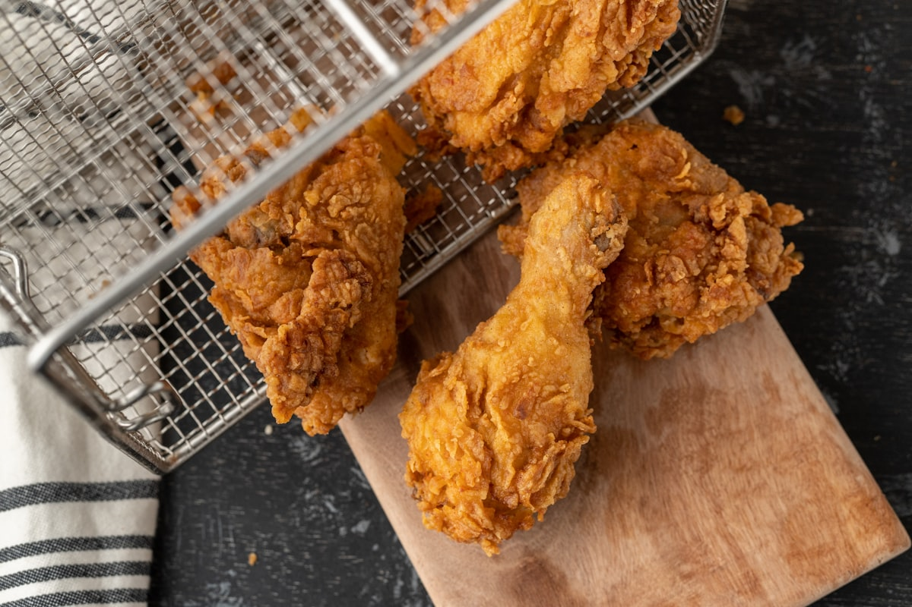

Asados Catrachos
Sizzling marinated flank steak, pork chops, and spicy chorizo served with fried sweet plantains, refried red beans, fresh avocado, and queso duro.
Explore Asados →Welcome to Deli HN, East Charlotte’s destination for true Honduran street food. Savor charcoal-grilled carne asada, crispy Pollo con Tajadas smothered in pink sauce and chimol, and handmade giant flour baleadas stretched fresh to order.

Prepared over real charcoal flames with traditional Honduran ingredients and family recipes.
Sizzling marinated flank steak, pork chops, and spicy chorizo served with fried sweet plantains, refried red beans, fresh avocado, and queso duro.
Explore Asados →San Pedro Sula style crispy golden chicken served over thinly sliced green plantains (tajadas), tangy cabbage slaw, chimol, and special pink sauce.
Discover Pollo Chuco →Warm thick flour tortillas made from scratch, filled with stewed red silk beans, creamy mantequilla blanca, scrambled eggs, and carne asada.
View Baleada Lineup →Our flank steak is marinated in citrus, garlic, and Latin spices, grilled over glowing hardwood charcoal, and served with rice, beans, fresh chimol salsa, and handmade tortillas.
Explore Grilled Meats →
Call (980) 780-0765 for fast outdoor pickup or join us at our plaza lot in East Charlotte until 11:00 PM on weekends.
Hours, Directions & Phone Line →